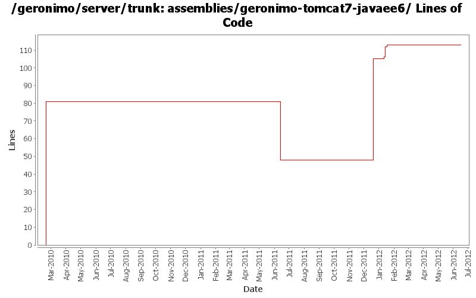

[root]/assemblies/geronimo-tomcat7-javaee6

| Author | Changes | Lines of Code | Lines per Change |
|---|---|---|---|
| Totals | 11 (100.0%) | 150 (100.0%) | 13.6 |
| dwoods | 1 (9.1%) | 81 (54.0%) | 81.0 |
| djencks | 6 (54.5%) | 66 (44.0%) | 11.0 |
| rickmcguire | 2 (18.2%) | 2 (1.3%) | 1.0 |
| xiaming | 1 (9.1%) | 1 (0.7%) | 1.0 |
| xuhaihong | 1 (9.1%) | 0 (0.0%) | 0.0 |
Update trunk version to 4.0.0-SNAPSHOT
1 lines of code changed in 1 file:
adapt to aries feature for full blueprint
1 lines of code changed in 1 file:
GERONIMO-6263 start on app client as karaf instance
6 lines of code changed in 1 file:
GERONIMO-6259 don't try to mess up pax logging so hard
1 lines of code changed in 1 file:
GERONIMO-6240 Modify configs so that they use features as the bootstrap, and fix a few compile and test errors. Servers build but do not fully start
10 lines of code changed in 1 file:
GERONIMO-6240 include startup features in assemblies
47 lines of code changed in 1 file:
Remove the old gshell property file and configurations
0 lines of code changed in 1 file:
[maven-release-plugin] prepare release 3.0-M2
1 lines of code changed in 1 file:
[maven-release-plugin] prepare branch 3.0-M2
1 lines of code changed in 1 file:
GERONIMO-5290 fix many of the deprecation warnings from maven 3
1 lines of code changed in 1 file:
Handle rename of tomcat plugin from javaee5 to javaee6 and rename assembly. Pull in wab instead of web plugingroups.
81 lines of code changed in 1 file: